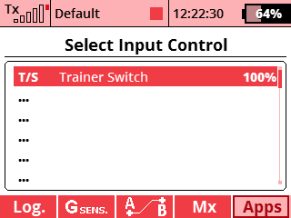

The application is useful for users who take advantage of the Teacher/Student mode. It allows you to play an audio file to indicate the model control handover between the teacher and student. Switching controls to the teacher is done automatically as soon as he/she moves any transmitter gimbal. The teacher thus gains immediate control of the model.
In the menu, choose Applications - User Applications. Press the F(3) key to open the application browser. Select the "TrainSw" file here.
Open the application configuration. Here you can choose the appropriate audio files and a switch:

You can download the source code from the official JETImodel Lua-Apps GitHub repository.